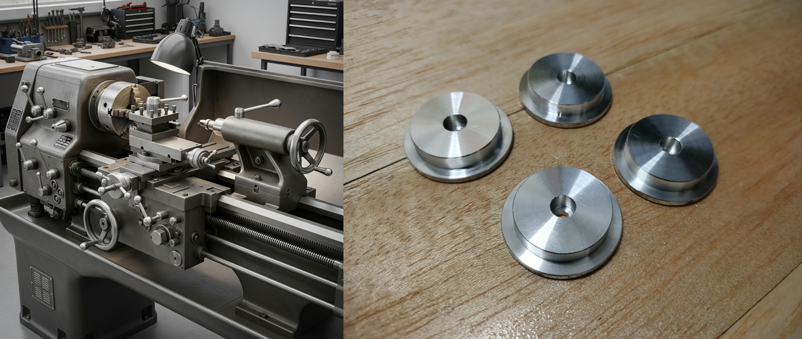
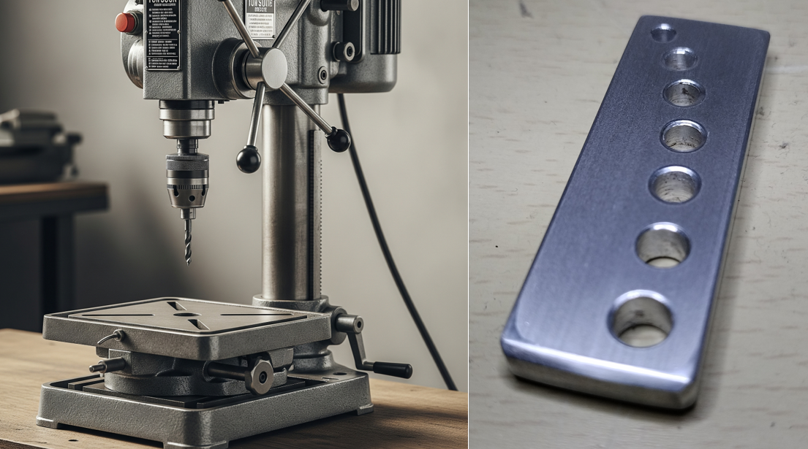
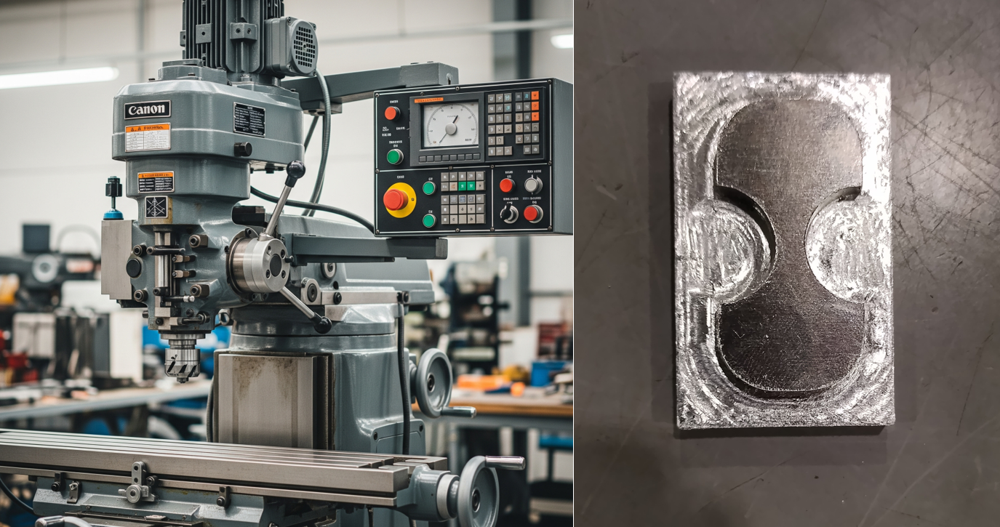

エネルギー機械コースの実習では旋盤やボール盤、 フライス盤などの工作機械を用いた金属加工をし、 文鎮や空気エンジンなどの様々な製品づくりに取り組んでいます。
旋盤は主にバイトと呼ばれる切削工具を用いて材料を削ります。実習で使用する旋盤は汎用旋盤であり、デジタルメータや自動送り機能などがついてとても便利です。 汎用旋盤を利用すれば右下の写真のように同じ形の車輪を寸法の誤差を最小限に抑えて加工することができます。
実習で使用する切削工具
材料に丸い穴を開けたい際に使用するのがボール盤です。実習で使用するボール盤には直立ボール盤と卓上ボール盤があります。直立ボール盤は直径がφ10mm程の 大きな穴を開ける際に使い、卓上ボール盤では比較的直径の小さな穴を開ける際に使うなどして使い分けています。 ボール盤を使用すると右下の写真のようにアルミニウム合金に複数の穴を開け、素敵なオブジェを制作することも可能です。
実習で使用する切削工具
ドリル など
材料に溝を掘りたい、より正確な位置にエンドミルで穴を開けたいなどとお言った際に使用するのがフライス盤です。 実習で使用するフライス盤も同様にデジタルメータや自動送り機能がついており切削面のバリをほとんど残すことなく材料を加工することが可能です。 フライス盤を利用すれば右下に示す写真のような複雑な形状の製品を製作することも可能です。
実習で使用する切削工具
エンドミル など
エネルギー機械コースでは材料力学や熱力学をはじめとし、様々な専門科目でプラントや生産機械の設計、航空機や船の設備などに繋がる知識を深めることが可能です。
エネルギー機械コースの専門科目